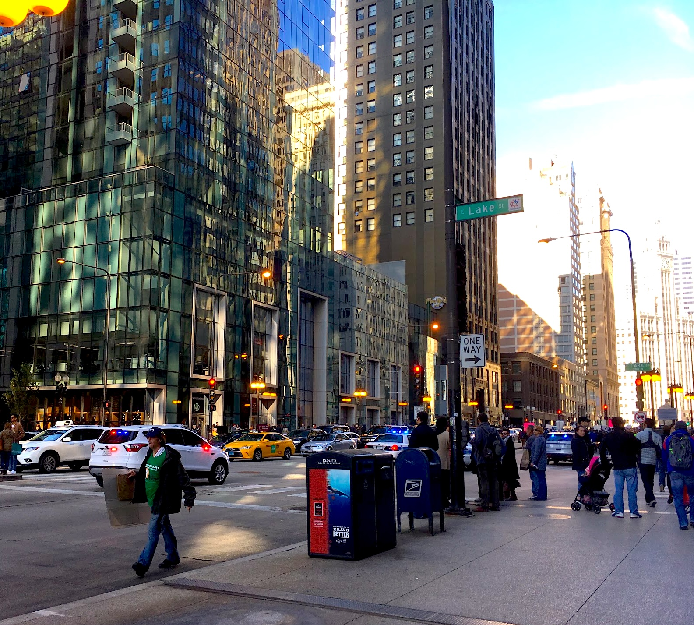
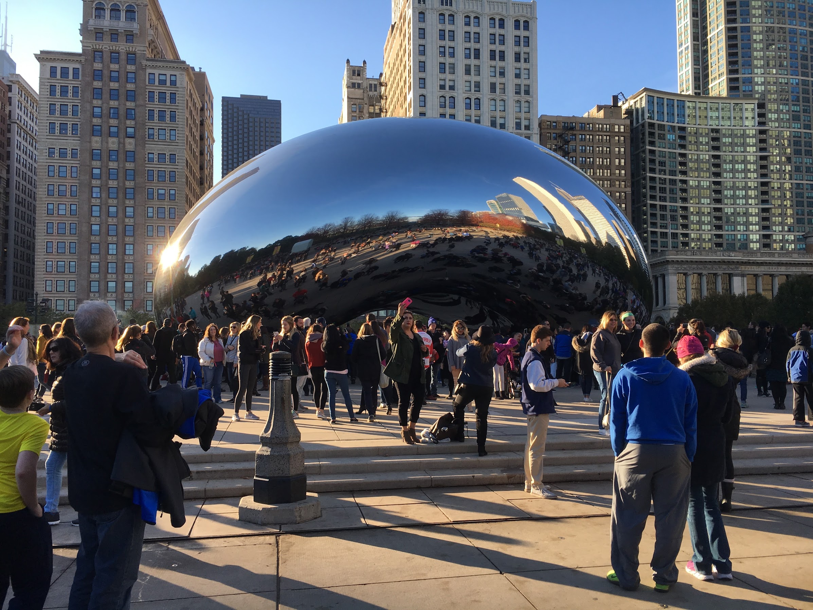
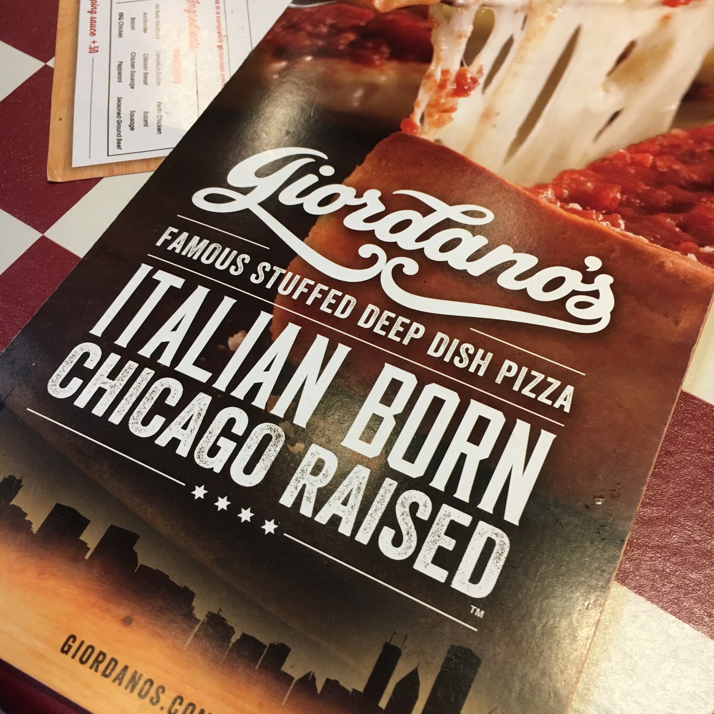

Welcome to my Chicago travel diary! Experiencing the streets of this famous city was amazing. Here are a few snapshots from my favorite moments exploring the streets, shops, and architecture.

Walking down Michigan Avenue.

Checking out the Cloud Gate.

Stopping by Giordano's for some famous Chicago deep dish pizza.
← Back to Travel Gallery